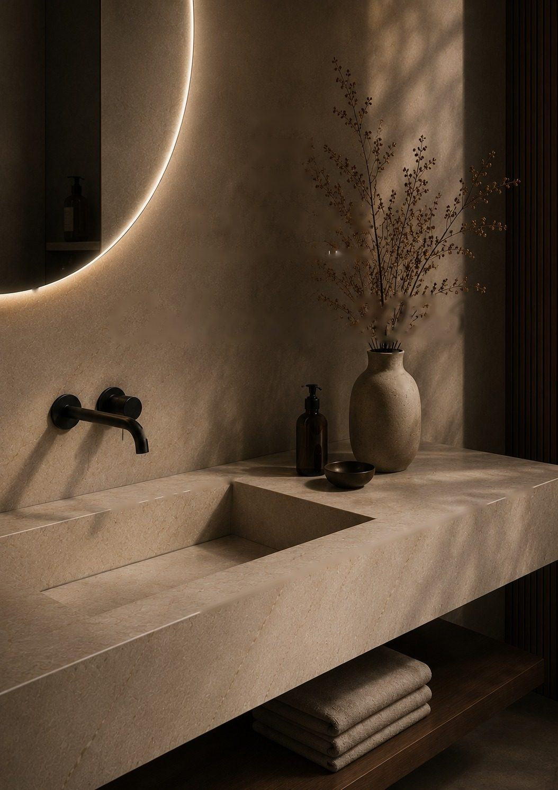
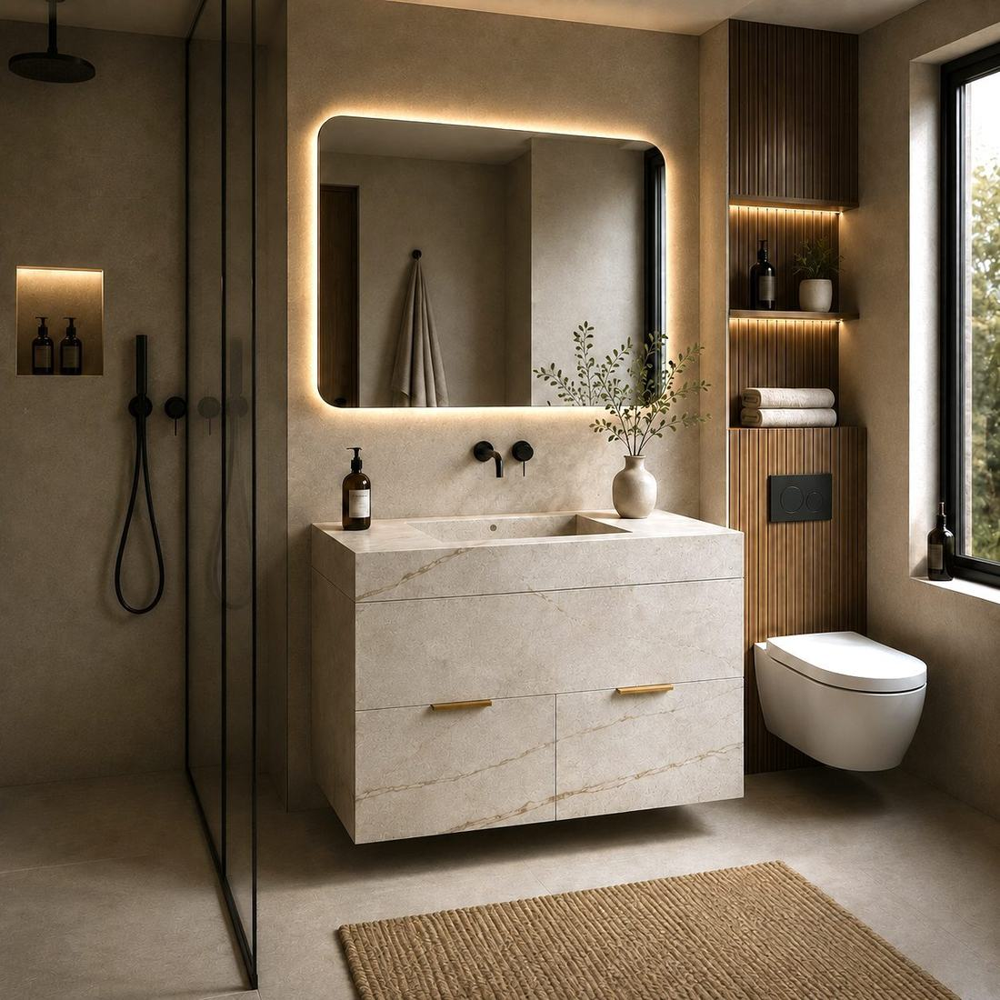
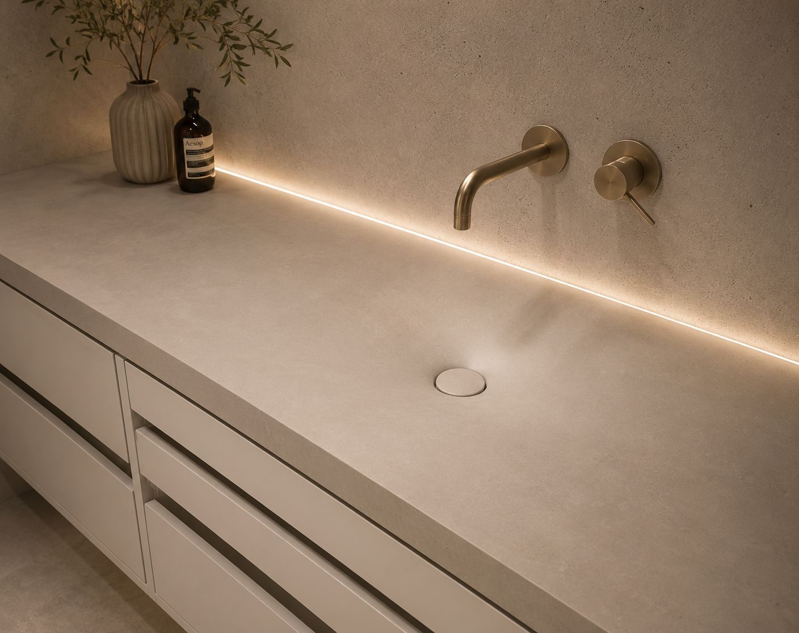
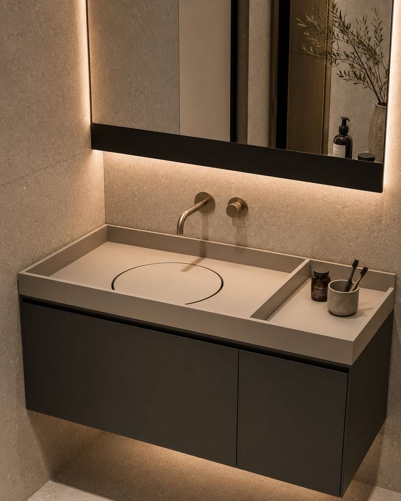
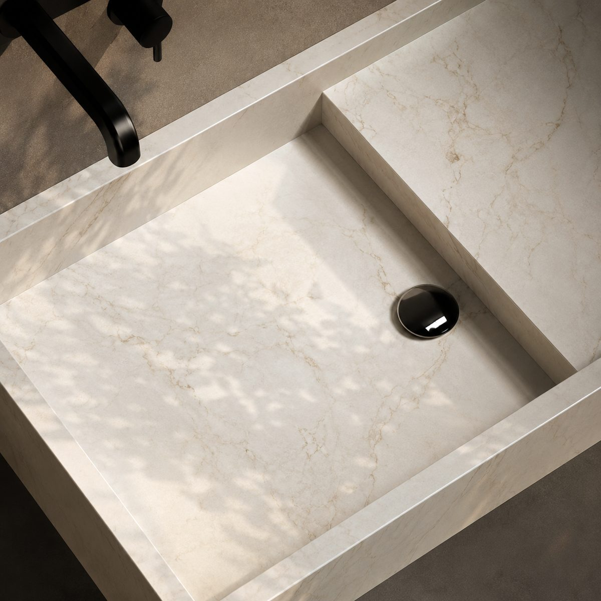
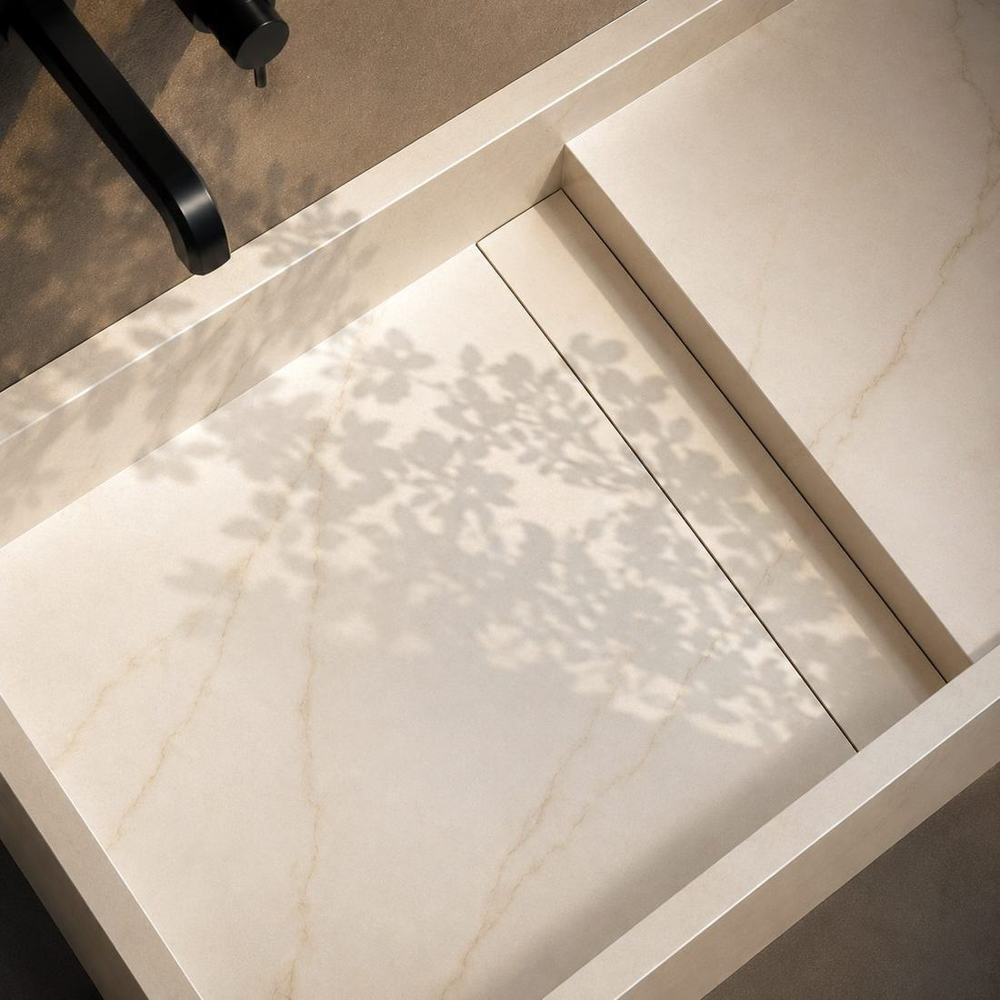
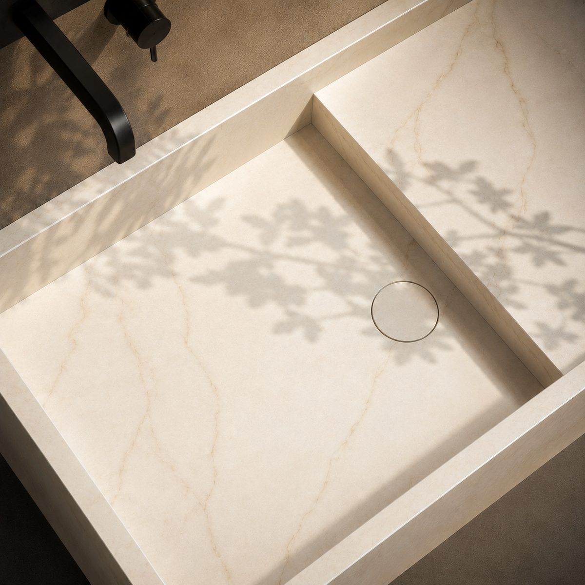
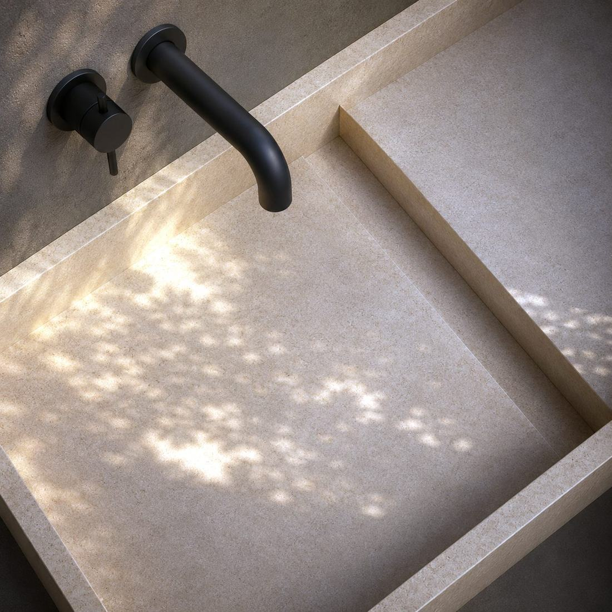

Умивальники
Врізні, накладні та суцільні стільниці-раковини.

ESTONE · своє виробництво, 14 років
Кухонні стільниці, умивальники, підвіконня, сходи. Працюємо з кварцом, акрилом, керамогранітом і натуральним каменем. Заміряємо, робимо і встановлюємо самі.
Перед замовленням
Стіни рідко бувають рівними, підлога майже завжди з ухилом. Готовий виріб у такий проріз не сідає. Зазор закривають плінтусом і герметиком, і потім саме там збирається вода.
Кожен стик через рік-два стає темною смугою. Відмити її не вийде, бо проблема під поверхнею. Треба переробляти вузол.
Матеріал купили в одних, різали другі, монтували треті. Щось пішло не так, і винного немає. Переробляєте за свій кошт.
Ми робимо весь цикл самі. Приїжджаємо на замір, креслимо, виготовляємо у себе, привозимо і встановлюємо. Якщо щось не так, є з кого спитати.
Порахувати мій проєктПродукція
Можна замовити одну стільницю, а можна всю квартиру чи об'єкт в одному камені.
Напрям 01
Стільницю, мийку і фартух можна зробити з одного каменю. Тоді між ними немає стиків, і вся робоча зона витирається одним рухом.


Кварц, акрил, керамограніт або натуральний камінь. Виріжемо під варильну поверхню і змішувач, підсилимо там, де великий звис.
Чашу робимо з того ж каменю, урівень зі стільницею. Ні бортика, ні шва, ні місця, де збирається бруд.
Суцільна панель замість плитки. Без затирки, яку доводиться щороку оновлювати, з готовими вирізами під розетки.
Робимо одним полотном, без стику посередині. Порахуємо звис і підсилення, щоб край не працював на злам.
Напрям 02
У каталозі 23 моделі умивальників. Якщо жодна не підходить, зробимо за вашим ескізом. Камінь непористий, тому не темніє від косметики і не тримає запах.
Врізні, накладні та суцільні стільниці-раковини.

Під накладну раковину, з вирізами під сантехніку.

Урівень з підлогою, зі щілинним трапом.

Великий формат, майже без швів і затирки.

Отвір під звичайний зливний клапан, який ви оберете самі.

Накривка з того ж каменю, лежить урівень з дном чаші.

Натиснули — відкрився, натиснули ще раз — закрився.

Зміщений і прихований, знімати нічого не треба.
Напрям 03
Довге вікно перекриваємо одним полотном, без шва посередині. Зробимо краплевідбійник, запил під укіс і обхід решіток, якщо треба.


Панорамне вікно закриваємо однією плитою. Зазвичай у таких випадках зрощують дві частини, і шов видно.
Кварц і керамограніт не жовтіють на сонці і спокійно тримають тепло від батареї знизу.
Продовжуємо підвіконня в робоче місце. Порахуємо навантаження і підкажемо, де потрібна опора.
Заміряємо проріз як він є. Накладки, щоб сховати зазор, не знадобляться.
Напрям 04
Робимо сходинки, підступенці й облицювання готового бетонного маршу. Заміряємо кожну сходинку окремо, бо однакових не буває.


Працюємо з тим маршем, який є. Нерівності враховуємо при розкрої, а не підганяємо деталь на місці.
Для натурального каменю беремо блок на весь марш, щоб прожилка переходила зі сходинки на сходинку.
На проступ робимо насічки або матову фактуру. Для громадських об'єктів це обов'язково.
Бічний плінтус з того ж каменю і оброблений торець. Щоб не шукати це окремо потім.
Напрям 05
Портали, столи, облицювання стін. Робимо за кресленням дизайнера або за ескізом, намальованим від руки.


Беремо породу, яка спокійно тримає тепло. Декор фрезеруємо на ЧПУ, ставимо на готову топку.
Обідні, журнальні, консолі. Підберемо плиту за малюнком і зробимо торець тієї товщини, яку хочете.
Акцентна стіна, ніша, зона під телевізор. Великий формат, мінімум швів, кріплення не видно.
Радіуси, наскрізні прорізи, складна геометрія. Те, за що зазвичай не беруться на потоці.
Напрям 06
Об'єкти, де поверхню миють щодня і не шкодують. Тут важливо, що буде з каменем через рік, а не як він виглядає на фото.


Складну геометрію ріжемо на ЧПУ, логотип фрезеруємо. Довгі стійки збираємо так, щоб стик не кидався в очі.
Витримують дезрозчин і гарячий посуд. Якщо поверхню пошкодять, відремонтуємо на місці, без заміни стільниці.
Одне рішення на всю мережу: те саме креслення і той самий декор для кожної точки.
Виріб на 2–6 місць одним полотном. Між чашами стиків немає, відламати теж нічого.
Камінь без пор, тримає реагенти і спиртову дезінфекцію.
Для ЖК і мереж працюємо за фіксованою специфікацією і графіком під етапи будівництва.
Матеріали
Підкажемо, що підійде під вашу задачу і бюджет. Дорожче не завжди означає краще.
Тримає суцільну поверхню без видимих швів і гнеться в будь-яку форму. Подряпину можна відшліфувати прямо на місці.
Ванна, складні формиТвердіший за акрил. Не боїться абразиву й побутової хімії, не вигорає на сонці.
Кухня, підвіконняСпокійно переживе гарячу каструлю, кислоту і пряме сонце. Плита тонка, але міцна, і буває дуже великого формату.
Кухня, панеліКожен блок зі своїм малюнком, другого такого не буде. Догляд потрібен акуратніший, і ми кажемо про це до замовлення, а не після.
Сходи, портали, акцентиПорядок роботи
Надсилаєте розміри, фото або креслення. Рахуємо і повертаємось протягом доби.
Приїжджаємо, знімаємо фактичну геометрію і дивимось, чи готове місце під монтаж.
Узгоджуємо все до початку роботи: розміри, вирізи, кромку, де будуть стики.
Ріжемо, обробляємо, шліфуємо і перевіряємо у себе. Від 5 робочих днів.
Привозимо і ставимо самі. Гарантія рахується з цього дня.
Про нас
Все на одному майданчику: форма, обробка, шліфування, перевірка. Між вами і верстатом нікого немає.
На сам виріб і на поверхню. Перед відправкою кожну деталь перевіряємо.
Від матового білого до мармуру з великою прожилкою. Зразки надішлемо, щоб ви подивились наживо.
Каталог це відправна точка. Геометрію, вирізи й отвори робимо під ваше приміщення.
Не вбирає воду, не темніє від косметики, не тримає запах. Спирт витримує.
Замір, виготовлення, доставка й монтаж наші. Не треба шукати, хто винен.
Ціна
Точну суму скажемо після заміру. Але порядок цифр назвемо одразу, щойно дасте розміри. Без зустрічей і без зобов'язань.
Надішліть розміри або креслення. У відповідь отримаєте ціну, варіанти матеріалу і термін.
Дізнатись цінуДля бізнесу
Робимо за вашими кресленнями і тримаємо терміни. Дамо зразки під проєкт і приїдемо на об'єкт, якщо треба. Для постійних і великих замовлень умови окремі, обговоримо.
Питання
Прості вироби готові за 5 робочих днів. Складна форма довше, точний термін назвемо до початку роботи, а не по ходу.
Так. Працюємо за кресленням дизайнера, за ескізом від руки або просто по розмірах, які зніме наш замірник. Меблевим фабрикам робимо за їхньою документацією.
На кухню частіше беруть кварц або керамограніт, у ванну акрил, на сходи і портали натуральний камінь. Це загальне правило. Коли будемо рахувати, підкажемо під вашу ситуацію і скажемо, де який камінь ставити не варто.
Сам виріб і поверхню, 5 років з дня монтажу. Перед відправкою кожну деталь перевіряємо на виробництві.
Так. Виробництво в Києві, є ще майданчик в Іспанії. Доставку й монтаж узгоджуємо разом із замовленням.
Так, надішлемо зразки. Дизайнерам і студіям на окремих умовах.
Дякуємо. Передзвонимо найближчим робочим часом, зазвичай це кілька годин.